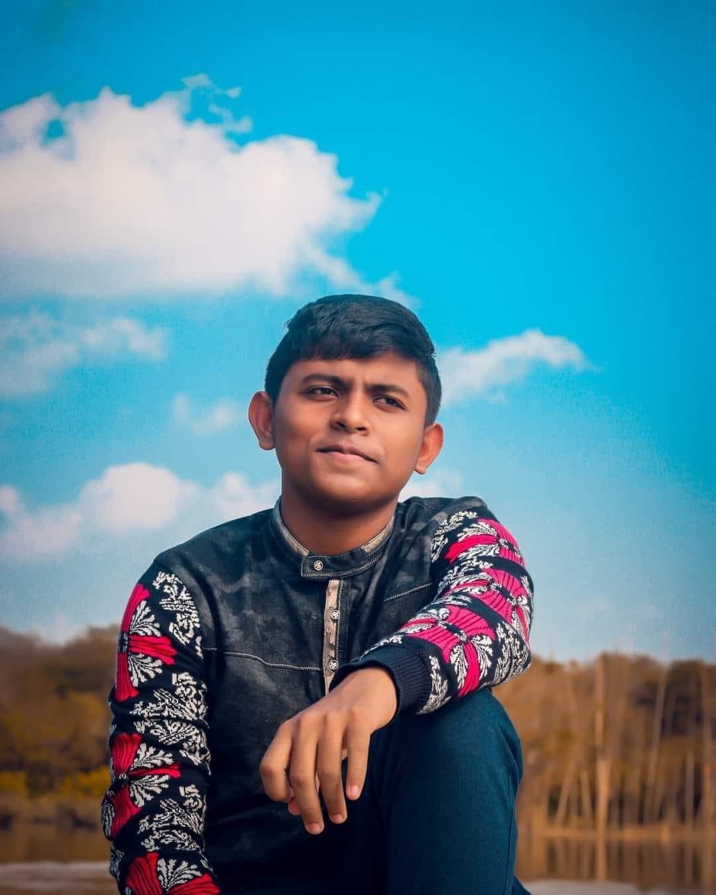

Hey there! I'm Nafiz Ahmed Sargis,I'm from Bangladesh, and I'm currently pursuing a Bachelor of Information Technology, majoring in Software Application Development at the University of Southern Queensland (UniSQ).
It all started with a simple wish: I wanted to see my name on the internet. That curiosity pushed me to learn how websites are built. When I built my first webpage, something inside me lit up. The excitement of creating something from nothing, of making it visible to the world that feeling told me I wanted to become a software developer who builds real solutions to modern problems.
Since then, I've worked on university projects and taught myself new things along the way. The project I'm most proud of is a Food Traceability System for my Database Management Systems course. I built the database using MySQL, created the front end with PHP, CSS, and JavaScript, and used Git and GitHub to manage my code. I learned about schema normalization, ER diagrams, and most importantly how to collaborate with others. That project wasn't just about writing code. It was about building something useful with a team.
Honestly, this didn't come easy for me. I'm naturally shy. I used to hold back my thoughts because I was afraid of being wrong. But working in group projects has helped me grow. I'm not perfect yet, but I'm learning to speak up, to share ideas, and to trust my voice. Every small step counts.
What I value most is honesty, clear communication, helpfulness, and directness. My friends would describe me as a helper. They know they can come to me with any problem and even if I don't have the answer, I will always try to help. My motto: "I don't have to know everything. I just have to be willing to help."
Right now, I'm studying full-time. I don't have a job yet. But outside of class, I follow technology trends, explore new tools like AI, and keep practicing. I love learning what's new and adapting to it.
This website is where I share my projects, my skills, my academic journey, and some blogs about what I'm learning. It's also where I finally put my name on the internet just like I always dreamed of. I'm still learning. But I believe I have great potential. And I'm on my way.
| Category | Skill | Level | Evidence |
|---|---|---|---|
| Web Development | HTML5 | Advanced | Built this portfolio + multiple coursework projects. Earned certification in HTML5 from Codecademy. |
| CSS3 | Advanced | Flexbox, Grid, animations, responsive design. Earned certification in CSS3 from Codecademy. | |
| JavaScript | Intermediate | Used in several coursework projects and personal experiments. | |
| Programming | Python | Intermediate | Used in different projects and earned the HackerRank Python Basic Certificate. Used for control flow, operators, and string manipulation. |
| Java | Intermediate | Year 2 OOP module, Project work - Simulating BG Press | |
| PHP | Intermediate | Year 2 DBMS module, Project work - Food Traceability System | |
| Database | SQL (MySQL) | Intermediate | Database module, wrote queries for coursework project - Food Traceability System |
| Database Design | Intermediate | Designed ER diagrams and relational database schemas for coursework projects, including Food Traceability System. | |
| Tools &Other | Git / GitHub | Intermediate | Version control for all projects, team coursework |